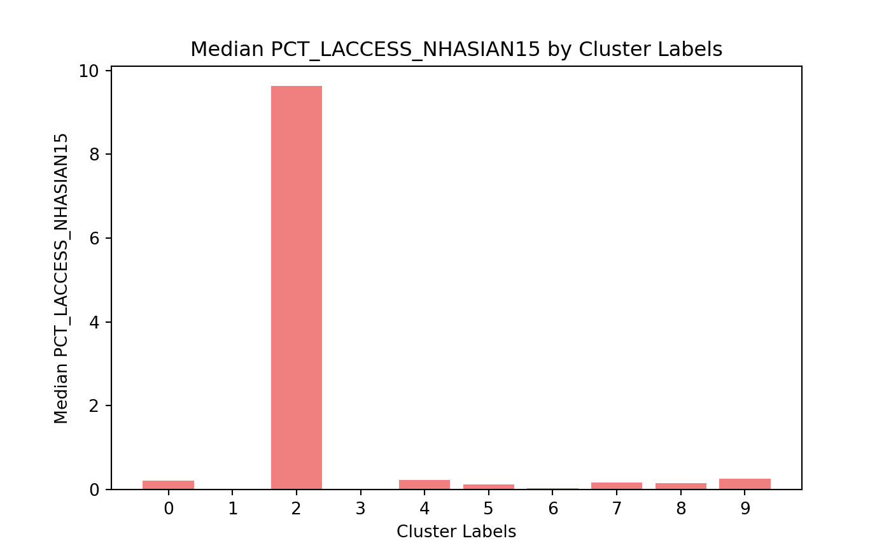

2 EDA
Lets bring in the data to get a sense for what we are working with.
import sqlite3
import pandas as pd
import seaborn as sns
import matplotlib.pyplot as plt
import numpy as np
#Path to the database
db_path = r"C:\Users\austi\OneDrive\Documents\Interviews\N1\Technical Assessment\challenge.db"
connection = sqlite3.connect(db_path)
query = "select * from access"
data = pd.read_sql_query(query,connection)
connection.close()
I am going to look through the data and get an understanding for how it is structured and what analysis can be performed.
## <class 'pandas.core.frame.DataFrame'>
## RangeIndex: 3143 entries, 0 to 3142
## Data columns (total 45 columns):
## # Column Non-Null Count Dtype
## --- ------ -------------- -----
## 0 index 3143 non-null int64
## 1 FIPS 3143 non-null int64
## 2 State 3143 non-null object
## 3 County 3143 non-null object
## 4 LACCESS_POP10 3143 non-null float64
## 5 LACCESS_POP15 3124 non-null float64
## 6 PCH_LACCESS_POP_10_15 3117 non-null float64
## 7 PCT_LACCESS_POP10 3143 non-null float64
## 8 PCT_LACCESS_POP15 3124 non-null float64
## 9 LACCESS_LOWI10 3143 non-null float64
## 10 LACCESS_LOWI15 3123 non-null float64
## 11 PCH_LACCESS_LOWI_10_15 3115 non-null float64
## 12 PCT_LACCESS_LOWI10 3143 non-null float64
## 13 PCT_LACCESS_LOWI15 3123 non-null float64
## 14 LACCESS_HHNV10 3143 non-null float64
## 15 LACCESS_HHNV15 3140 non-null float64
## 16 PCH_LACCESS_HHNV_10_15 3129 non-null float64
## 17 PCT_LACCESS_HHNV10 3143 non-null float64
## 18 PCT_LACCESS_HHNV15 3140 non-null float64
## 19 LACCESS_SNAP15 3123 non-null float64
## 20 PCT_LACCESS_SNAP15 3123 non-null float64
## 21 LACCESS_CHILD10 3143 non-null float64
## 22 LACCESS_CHILD15 3124 non-null float64
## 23 LACCESS_CHILD_10_15 3115 non-null float64
## 24 PCT_LACCESS_CHILD10 3143 non-null float64
## 25 PCT_LACCESS_CHILD15 3124 non-null float64
## 26 LACCESS_SENIORS10 3143 non-null float64
## 27 LACCESS_SENIORS15 3124 non-null float64
## 28 PCH_LACCESS_SENIORS_10_15 3117 non-null float64
## 29 PCT_LACCESS_SENIORS10 3143 non-null float64
## 30 PCT_LACCESS_SENIORS15 3124 non-null float64
## 31 LACCESS_WHITE15 3124 non-null float64
## 32 PCT_LACCESS_WHITE15 3124 non-null float64
## 33 LACCESS_BLACK15 3124 non-null float64
## 34 PCT_LACCESS_BLACK15 3124 non-null float64
## 35 LACCESS_HISP15 3124 non-null float64
## 36 PCT_LACCESS_HISP15 3124 non-null float64
## 37 LACCESS_NHASIAN15 3124 non-null float64
## 38 PCT_LACCESS_NHASIAN15 3124 non-null float64
## 39 LACCESS_NHNA15 3124 non-null float64
## 40 PCT_LACCESS_NHNA15 3124 non-null float64
## 41 LACCESS_NHPI15 3124 non-null float64
## 42 PCT_LACCESS_NHPI15 3124 non-null float64
## 43 LACCESS_MULTIR15 3124 non-null float64
## 44 PCT_LACCESS_MULTIR15 3124 non-null float64
## dtypes: float64(41), int64(2), object(2)
## memory usage: 1.1+ MB
## None
There seems to be two types of variables, raw count and percentages. I am going to drop out raw counts because we are going to want to see how percentages of populations vary across the US. This will put all of the counties onto the same playing field.
The other thing I have noticed is there seems to be data from 2010, 2015, and a relative difference between the two years. Where I can, I am going to drop out the single 2010 and 2015 years because I am more interested in the relative change. This will give me a sense for how that specific area has changed over time.
#Change the LACCESS_CHILD_10_15 variable to keep up with the other names
data.rename(columns={'LACCESS_CHILD_10_15': 'PCH_LACCESS_CHILD_10_15'}, inplace=True)
data = data.loc[:, ~data.columns.str.startswith("LACCESS")]
vars_drop = list (['index','PCT_LACCESS_POP10','PCT_LACCESS_POP15','PCT_LACCESS_LOWI10',
'PCT_LACCESS_LOWI15','PCT_LACCESS_HHNV10','PCT_LACCESS_HHNV15',
'PCT_LACCESS_CHILD10','PCT_LACCESS_CHILD15','PCT_LACCESS_SENIORS10',
'PCT_LACCESS_SENIORS15'])
data.drop(columns=vars_drop, inplace=True)
print(data.info())## <class 'pandas.core.frame.DataFrame'>
## RangeIndex: 3143 entries, 0 to 3142
## Data columns (total 16 columns):
## # Column Non-Null Count Dtype
## --- ------ -------------- -----
## 0 FIPS 3143 non-null int64
## 1 State 3143 non-null object
## 2 County 3143 non-null object
## 3 PCH_LACCESS_POP_10_15 3117 non-null float64
## 4 PCH_LACCESS_LOWI_10_15 3115 non-null float64
## 5 PCH_LACCESS_HHNV_10_15 3129 non-null float64
## 6 PCT_LACCESS_SNAP15 3123 non-null float64
## 7 PCH_LACCESS_CHILD_10_15 3115 non-null float64
## 8 PCH_LACCESS_SENIORS_10_15 3117 non-null float64
## 9 PCT_LACCESS_WHITE15 3124 non-null float64
## 10 PCT_LACCESS_BLACK15 3124 non-null float64
## 11 PCT_LACCESS_HISP15 3124 non-null float64
## 12 PCT_LACCESS_NHASIAN15 3124 non-null float64
## 13 PCT_LACCESS_NHNA15 3124 non-null float64
## 14 PCT_LACCESS_NHPI15 3124 non-null float64
## 15 PCT_LACCESS_MULTIR15 3124 non-null float64
## dtypes: float64(13), int64(1), object(2)
## memory usage: 393.0+ KB
## None I am going to look to see if we have any missing values
I am going to look to see if we have any missing values
# Check for missing values in each column
missing_values = data.isnull().sum()
# Display columns with missing values
print(missing_values)## FIPS 0
## State 0
## County 0
## PCH_LACCESS_POP_10_15 26
## PCH_LACCESS_LOWI_10_15 28
## PCH_LACCESS_HHNV_10_15 14
## PCT_LACCESS_SNAP15 20
## PCH_LACCESS_CHILD_10_15 28
## PCH_LACCESS_SENIORS_10_15 26
## PCT_LACCESS_WHITE15 19
## PCT_LACCESS_BLACK15 19
## PCT_LACCESS_HISP15 19
## PCT_LACCESS_NHASIAN15 19
## PCT_LACCESS_NHNA15 19
## PCT_LACCESS_NHPI15 19
## PCT_LACCESS_MULTIR15 19
## dtype: int64 To fill the missing values, I am going to use MICE as the imputation method and
create a binary flag that will signal to us if that observation for a specific
column has been imputed or not. MICE is a statistical method used to fill
missing values. Its goal is to use other variables as predictors in a
regression model in the observation to predict what the missing value would be.
To fill the missing values, I am going to use MICE as the imputation method and
create a binary flag that will signal to us if that observation for a specific
column has been imputed or not. MICE is a statistical method used to fill
missing values. Its goal is to use other variables as predictors in a
regression model in the observation to predict what the missing value would be.
It is important to note that all the ethnic categories all have 19 missing values. After some digging, it turns out that there are 19 counties that are missing this data.
from sklearn.experimental import enable_iterative_imputer
from sklearn.impute import IterativeImputer
# Apply MICE imputation to numeric data
imputer = IterativeImputer(max_iter=10, random_state=22)
numeric_data = data.select_dtypes(include=['float64'])
# Create a Data frame to store flags for imputed values
flags = numeric_data.isnull().astype(int) # 1 for missing, 0 for not missing
flags = flags.add_suffix("_imputed") # Append "_imputed" to column names
# Perform imputation
data_imputed = imputer.fit_transform(numeric_data)
# Convert the imputed data back to a DataFrame
data_imputed_df = pd.DataFrame(data_imputed, columns=numeric_data.columns)
# Extract non-numeric columns
non_numeric_data = data.select_dtypes(exclude=['float64'])
# Concatenate the imputed numeric data, flags, and non-numeric columns
data = pd.concat([non_numeric_data, data_imputed_df, flags.reset_index(drop=True)], axis=1)
# Check for missing values to make sure the imputation worked
missing_values = data.isnull().sum()
print(missing_values)## FIPS 0
## State 0
## County 0
## PCH_LACCESS_POP_10_15 0
## PCH_LACCESS_LOWI_10_15 0
## PCH_LACCESS_HHNV_10_15 0
## PCT_LACCESS_SNAP15 0
## PCH_LACCESS_CHILD_10_15 0
## PCH_LACCESS_SENIORS_10_15 0
## PCT_LACCESS_WHITE15 0
## PCT_LACCESS_BLACK15 0
## PCT_LACCESS_HISP15 0
## PCT_LACCESS_NHASIAN15 0
## PCT_LACCESS_NHNA15 0
## PCT_LACCESS_NHPI15 0
## PCT_LACCESS_MULTIR15 0
## PCH_LACCESS_POP_10_15_imputed 0
## PCH_LACCESS_LOWI_10_15_imputed 0
## PCH_LACCESS_HHNV_10_15_imputed 0
## PCT_LACCESS_SNAP15_imputed 0
## PCH_LACCESS_CHILD_10_15_imputed 0
## PCH_LACCESS_SENIORS_10_15_imputed 0
## PCT_LACCESS_WHITE15_imputed 0
## PCT_LACCESS_BLACK15_imputed 0
## PCT_LACCESS_HISP15_imputed 0
## PCT_LACCESS_NHASIAN15_imputed 0
## PCT_LACCESS_NHNA15_imputed 0
## PCT_LACCESS_NHPI15_imputed 0
## PCT_LACCESS_MULTIR15_imputed 0
## dtype: int64
I am now left with 13 variables and their imputation flags that will be able to give me an idea on how a county is looking with their population having low access to stores.
Next, I am going to run a correlation analysis to get an idea of any relationships with these variables
# Select only numeric columns for correlation analysis
numeric_data = data.select_dtypes(include=['float64', 'int64'])
#Create the correlation Matrix
correlation_matrix = numeric_data.corr()
# Filter strong correlations
strong_correlations = correlation_matrix.stack()
# Filter only values with absolute correlation >= 0.7 and exclude 1 (self-correlation)
strong_correlations = strong_correlations[(np.abs(strong_correlations) >= 0.7) & (strong_correlations != 1)]
# Remove duplicates (pairs like (A, B) and (B, A) are included twice)
strong_correlations = strong_correlations[strong_correlations.index.get_level_values(0) < strong_correlations.index.get_level_values(1)]
# Print the strong correlations
print("Strong correlations (>= 0.7):")## Strong correlations (>= 0.7):## PCH_LACCESS_POP_10_15 PCH_LACCESS_SENIORS_10_15 0.999694
## PCH_LACCESS_LOWI_10_15 PCH_LACCESS_POP_10_15 0.999987
## PCH_LACCESS_SENIORS_10_15 0.999808
## PCH_LACCESS_CHILD_10_15 PCH_LACCESS_POP_10_15 0.999961
## PCH_LACCESS_LOWI_10_15 0.999902
## PCH_LACCESS_SENIORS_10_15 0.999438
## PCT_LACCESS_HISP15 PCT_LACCESS_MULTIR15 0.797906
## PCH_LACCESS_POP_10_15_imputed PCT_LACCESS_SNAP15_imputed 0.832039
## PCH_LACCESS_SENIORS_10_15_imputed 0.961218
## PCT_LACCESS_WHITE15_imputed 0.853892
## PCT_LACCESS_BLACK15_imputed 0.853892
## PCT_LACCESS_HISP15_imputed 0.853892
## PCT_LACCESS_NHASIAN15_imputed 0.853892
## PCT_LACCESS_NHNA15_imputed 0.853892
## PCT_LACCESS_NHPI15_imputed 0.853892
## PCT_LACCESS_MULTIR15_imputed 0.853892
## PCH_LACCESS_LOWI_10_15_imputed PCH_LACCESS_POP_10_15_imputed 0.963315
## PCT_LACCESS_SNAP15_imputed 0.844071
## PCH_LACCESS_SENIORS_10_15_imputed 0.925931
## PCT_LACCESS_WHITE15_imputed 0.822567
## PCT_LACCESS_BLACK15_imputed 0.822567
## PCT_LACCESS_HISP15_imputed 0.822567
## PCT_LACCESS_NHASIAN15_imputed 0.822567
## PCT_LACCESS_NHNA15_imputed 0.822567
## PCT_LACCESS_NHPI15_imputed 0.822567
## PCT_LACCESS_MULTIR15_imputed 0.822567
## PCT_LACCESS_SNAP15_imputed PCT_LACCESS_WHITE15_imputed 0.974523
## PCH_LACCESS_CHILD_10_15_imputed PCH_LACCESS_POP_10_15_imputed 0.963315
## PCH_LACCESS_LOWI_10_15_imputed 0.927929
## PCT_LACCESS_SNAP15_imputed 0.801488
## PCH_LACCESS_SENIORS_10_15_imputed 0.925931
## PCT_LACCESS_WHITE15_imputed 0.822567
## PCT_LACCESS_BLACK15_imputed 0.822567
## PCT_LACCESS_HISP15_imputed 0.822567
## PCT_LACCESS_NHASIAN15_imputed 0.822567
## PCT_LACCESS_NHNA15_imputed 0.822567
## PCT_LACCESS_NHPI15_imputed 0.822567
## PCT_LACCESS_MULTIR15_imputed 0.822567
## PCH_LACCESS_SENIORS_10_15_imputed PCT_LACCESS_SNAP15_imputed 0.832039
## PCT_LACCESS_WHITE15_imputed 0.853892
## PCT_LACCESS_BLACK15_imputed 0.853892
## PCT_LACCESS_HISP15_imputed 0.853892
## PCT_LACCESS_NHASIAN15_imputed 0.853892
## PCT_LACCESS_NHNA15_imputed 0.853892
## PCT_LACCESS_NHPI15_imputed 0.853892
## PCT_LACCESS_MULTIR15_imputed 0.853892
## PCT_LACCESS_BLACK15_imputed PCT_LACCESS_SNAP15_imputed 0.974523
## PCT_LACCESS_HISP15_imputed PCT_LACCESS_SNAP15_imputed 0.974523
## PCT_LACCESS_NHASIAN15_imputed PCT_LACCESS_SNAP15_imputed 0.974523
## PCT_LACCESS_NHNA15_imputed PCT_LACCESS_SNAP15_imputed 0.974523
## PCT_LACCESS_NHPI15_imputed PCT_LACCESS_SNAP15_imputed 0.974523
## PCT_LACCESS_MULTIR15_imputed PCT_LACCESS_SNAP15_imputed 0.974523
## dtype: float64PCH_LACCESS_CHILD_10_15, PCH_LACCESS_LOWI_10_15, and PCH_LACCESS_SENIORS_10_15 are perfectly correlated with PCH_LACCESS_POP_10_15. This lets me know that I can drop out PCH_LACCESS_CHILD_10_15, PCH_LACCESS_SENIORS_10_15, and PCH_LACCESS_LOWI_10_15 due to PCH_LACCESS_POP_10_15 being able to give me the same signal.
data.drop(columns=['PCH_LACCESS_CHILD_10_15','PCH_LACCESS_SENIORS_10_15',
'PCH_LACCESS_LOWI_10_15','PCH_LACCESS_CHILD_10_15_imputed',
'PCH_LACCESS_SENIORS_10_15_imputed','PCH_LACCESS_LOWI_10_15_imputed'],
inplace=True)
print(data.info())## <class 'pandas.core.frame.DataFrame'>
## RangeIndex: 3143 entries, 0 to 3142
## Data columns (total 23 columns):
## # Column Non-Null Count Dtype
## --- ------ -------------- -----
## 0 FIPS 3143 non-null int64
## 1 State 3143 non-null object
## 2 County 3143 non-null object
## 3 PCH_LACCESS_POP_10_15 3143 non-null float64
## 4 PCH_LACCESS_HHNV_10_15 3143 non-null float64
## 5 PCT_LACCESS_SNAP15 3143 non-null float64
## 6 PCT_LACCESS_WHITE15 3143 non-null float64
## 7 PCT_LACCESS_BLACK15 3143 non-null float64
## 8 PCT_LACCESS_HISP15 3143 non-null float64
## 9 PCT_LACCESS_NHASIAN15 3143 non-null float64
## 10 PCT_LACCESS_NHNA15 3143 non-null float64
## 11 PCT_LACCESS_NHPI15 3143 non-null float64
## 12 PCT_LACCESS_MULTIR15 3143 non-null float64
## 13 PCH_LACCESS_POP_10_15_imputed 3143 non-null int64
## 14 PCH_LACCESS_HHNV_10_15_imputed 3143 non-null int64
## 15 PCT_LACCESS_SNAP15_imputed 3143 non-null int64
## 16 PCT_LACCESS_WHITE15_imputed 3143 non-null int64
## 17 PCT_LACCESS_BLACK15_imputed 3143 non-null int64
## 18 PCT_LACCESS_HISP15_imputed 3143 non-null int64
## 19 PCT_LACCESS_NHASIAN15_imputed 3143 non-null int64
## 20 PCT_LACCESS_NHNA15_imputed 3143 non-null int64
## 21 PCT_LACCESS_NHPI15_imputed 3143 non-null int64
## 22 PCT_LACCESS_MULTIR15_imputed 3143 non-null int64
## dtypes: float64(10), int64(11), object(2)
## memory usage: 564.9+ KB
## NoneThe other interesting finding from the correlation analysis was PCT_LACCESS_HISP15 and PCT_LACCESS_MULTIR15 having a correlation of 0.8. This tells me that percentage of Hispanic ethnicity who have low access to stores and Multiracial who have low access to stores are linked together. As one of the groups increase in the percentage of people who have low access to stores, the other group goes up as well.
Moving forward, I will use principal component analysis to reduce dimensionality and then perform either the k-means clustering algorithm or the DBSCAN algorithm depending on if the data is spatially grouped together or not.